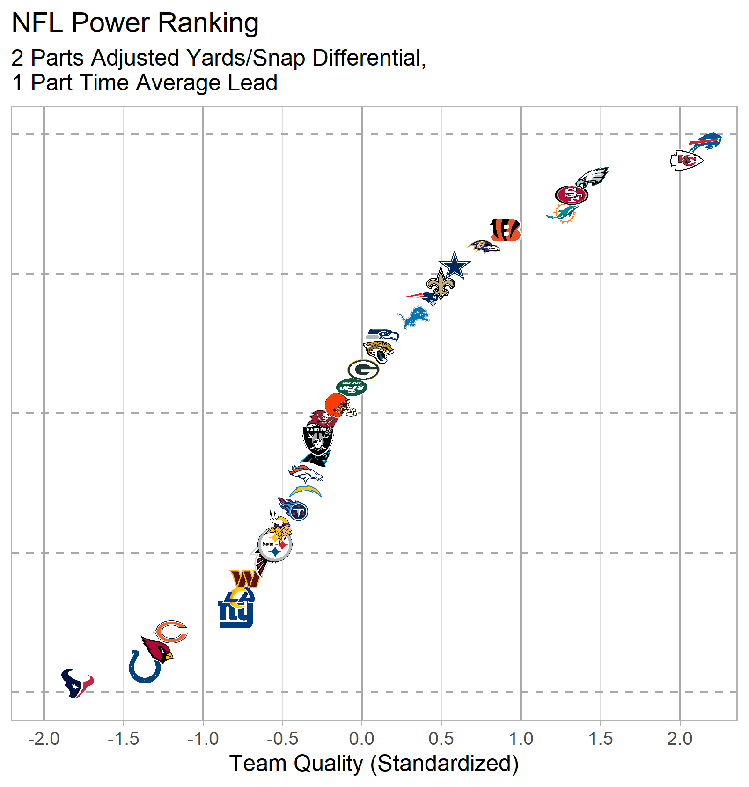

Packages Used
Code to Generate Data
Show code
time_avg_df <- nfltools::nfl_mvt_season(year = 2022) %>%
mutate(expected_win_percentage = exp(0.31 * time_avg_lead)/(1 + exp(0.31 * time_avg_lead))) %>%
filter(is.na(time_avg_lead) == F) %>%
group_by(team) %>%
summarize(time_avg_lead = mean(time_avg_lead, na.rm = T),
time_avg_wins = sum(expected_win_percentage, na.rm = T),
time_avg_win_percent = time_avg_wins/n()) %>%
mutate(time_avg_std = scale(time_avg_lead))
penalty_yards_gained <- function(df){
df %>%
mutate(yards_gained = ifelse(play_type_nfl == "PENALTY",
ifelse(penalty_team == posteam,
-1 * penalty_yards,
penalty_yards),
yards_gained)) %>%
return()
}
pbp_df <- nflfastR::load_pbp(2022) %>%
filter(season_type == "REG") %>%
filter(play_type_nfl %in% c("GAME_START",
"KICK_OFF",
"PUNT",
"TIMEOUT",
"FIELD_GOAL",
"XP_KICK",
"END_QUARTER",
"END_GAME",
"PAT2",
"FREE_KICK",
"COMMENT") == F) %>%
filter(is.na(play_type_nfl) == F) %>%
filter(play_type %in% c("qb_kneel",
"qb_spike") == F) %>%
filter(grepl("(Punt formation)", desc) == F) %>%
filter(grepl(", offsetting.", desc) == F) %>%
penalty_yards_gained()
mod_rand_int <- lme4::lmer(yards_gained ~ 1 + (1|posteam) + (1|defteam),
data = pbp_df)
off_avg <- pbp_df %>%
group_by(posteam) %>%
summarize(off_yards_per_snap = mean(yards_gained)) %>%
rename(team = posteam)
off_rand_int <- coef(mod_rand_int)$posteam %>%
rownames_to_column(var = "team") %>%
rename(off_adj_yards_per_snap = `(Intercept)`)
def_avg <- pbp_df %>%
group_by(defteam) %>%
summarize(def_yards_per_snap = mean(yards_gained)) %>%
rename(team = defteam)
def_rand_int <- coef(mod_rand_int)$defteam %>%
rownames_to_column(var = "team") %>%
rename(def_adj_yards_per_snap = `(Intercept)`)
per_snap_df <- off_avg %>%
left_join(off_rand_int,
by = "team") %>%
left_join(def_avg,
by = "team") %>%
left_join(def_rand_int,
by = "team")
df <- teams_colors_logos %>%
select(team_logo_espn,
team_abbr) %>%
rename(team = team_abbr) %>%
left_join(time_avg_df,
by = "team") %>%
# Removes old team names present in teams_colors_logos data.frame
filter(is.na(time_avg_lead) == F) %>%
left_join(per_snap_df,
by = "team") %>%
mutate(yards_per_snap_diff = off_yards_per_snap - def_yards_per_snap,
adj_yards_per_snap_diff = off_adj_yards_per_snap - def_adj_yards_per_snap) %>%
mutate(adj_per_snap_std = scale(adj_yards_per_snap_diff)) %>%
mutate(adj_per_snap_percentile = pnorm(adj_per_snap_std))Graphical Summaries
(Time) Average Lead Statistics
Show code
p_time_avg <- df %>%
ggplot(aes(x = time_avg_lead, y = time_avg_win_percent)) +
geom_vline(xintercept = 0,
color = "black") +
geom_hline(yintercept = 0,
color = "black") +
geom_nfl_logos(aes(team_abbr = team),
width = 0.05) +
coord_cartesian(ylim = c(0.2, 0.8)) +
scale_x_continuous(breaks = seq(from = -24, to = 24, by = 3),
minor_breaks = NULL) +
scale_y_continuous(breaks = seq(from = 0.2, to = 0.8, by = 0.2),
minor_breaks = NULL,
labels = scales::percent) +
theme_light() +
labs(title = "2022 NFL Time Average Lead Performance",
x = "Regulation (Time) Average Lead (Points)",
y = "Time Average Win Percentage",
caption = "Data via nflfastR. Plot via nflplotR.")
ggsave(filename = "time_avg_plot.png",
plot = p_time_avg,
height = 5.25,
width = 5,
units = "in",
dpi = "retina")
Show code
p_time_avg_standardized <- df %>%
arrange(time_avg_lead) %>%
mutate(rank = row_number(),
time_avg_lead = scale(time_avg_lead)) %>%
ggplot(aes(x = time_avg_lead,
y = rank)) +
geom_hline(yintercept = c(0.5, 8.5, 16.5, 24.5, 32.5),
color = "dark gray",
linetype = "dashed") +
geom_vline(xintercept = c(-2, -1, 0, 1, 2),
color = "dark gray") +
geom_nfl_logos(aes(team_abbr = team),
width = 0.05) +
scale_x_continuous(minor_breaks = NULL,
breaks = seq(-4, 4, by = 0.5)) +
scale_y_continuous(breaks = NULL,
minor_breaks = NULL) +
theme_light() +
labs(title = "2022 NFL Time Average Lead Rankings",
x = "Time Average Lead: Standardized",
y = NULL,
caption = "Data: nflfastR | Plot: nflplotR")
ggsave("nfl_time_avg_lead_standardized.png",
plot = p_time_avg_standardized,
units = "in",
height = 5.25,
width = 5,
dpi = "retina")
Adjusted Yards Per Play
Show code
p_adj_yards_per_snap <- df %>%
ggplot(aes(x = off_adj_yards_per_snap,
y = def_adj_yards_per_snap)) +
geom_vline(xintercept = mean(df$off_adj_yards_per_snap),
color = "black") +
geom_hline(yintercept = mean(df$def_adj_yards_per_snap)) +
geom_nfl_logos(aes(team_abbr = team),
width = 0.05) +
scale_x_continuous(minor_breaks = NULL) +
scale_y_reverse(minor_breaks = NULL) +
theme_light() +
labs(title = "2022 NFL Adjusted Yards Per Snap Performance",
subtitle = "Excludes Kneels/Spikes. Includes Penalty Yardage.\nyards_gained ~ 1 + (1|posteam) + (1|defteam)",
x = "Offense Adjusted Yards/Snap Gained",
y = "Defense Adjusted Yards/Snap Allowed",
caption = "Data: nflfastR | Plot: nflplotR | Model: lme4")
ggsave("nfl_adj_per_snap_units.png",
plot = p_adj_yards_per_snap,
units = "in",
height = 5.25,
width = 5,
dpi = "retina")
Show code
p_per_snap_standardized <- df %>%
arrange(adj_per_snap_std) %>%
mutate(rank = row_number()) %>%
ggplot(aes(x = adj_per_snap_std,
y = rank)) +
geom_hline(yintercept = c(0.5, 8.5, 16.5, 24.5, 32.5),
color = "dark gray",
linetype = "dashed") +
geom_vline(xintercept = seq(-2, 2, by = 1),
color = "dark gray") +
geom_nfl_logos(aes(team_abbr = team),
width = 0.05) +
scale_x_continuous(minor_breaks = NULL,
breaks = seq(-4, 4, by = 0.5)) +
scale_y_continuous(breaks = NULL,
minor_breaks = NULL) +
theme_light() +
labs(title = "2022 NFL Adjusted Yards/Snap Differential Rankings",
subtitle = "Excludes Kneels/Spikes. Includes Penalty Yardage.\nyards_gained ~ 1 + (1|posteam) + (1|defteam)",
x = "Adjusted Yards/Snap Differential: Standardized",
y = NULL,
caption = "Data: nflfastR | Plot: nflplotR | Model: lme4")
ggsave("nfl_adj_per_snap_standardized.png",
plot = p_per_snap_standardized,
units = "in",
height = 5.25,
width = 5,
dpi = "retina")
NFL Power Ranking
Show code
p_composite_rank <- df %>%
mutate(composite = ((2*adj_per_snap_std) + time_avg_std)/3) %>%
arrange(composite) %>%
mutate(composite_rank = row_number()) %>%
ggplot(aes(x = composite,
y = composite_rank)) +
geom_hline(yintercept = c(0.5, 8.5, 16.5, 24.5, 32.5),
color = "dark gray",
linetype = "dashed") +
geom_vline(xintercept = seq(-2, 2, by = 1),
color = "dark gray") +
geom_nfl_logos(aes(team_abbr = team),
width = 0.05) +
scale_x_continuous(minor_breaks = NULL,
breaks = seq(-4, 4, by = 0.5)) +
scale_y_continuous(breaks = NULL,
minor_breaks = NULL) +
theme_light() +
labs(x = "Team Quality (Standardized)",
y = NULL,
title = "NFL Power Ranking",
subtitle = "2 Parts Adjusted Yards/Snap Differential,\n1 Part Time Average Lead")
ggsave("nfl_composite_rank.png",
plot = p_composite_rank,
units = "in",
height = 5.25,
width = 5,
dpi = "retina")
Table
Show code
df %>%
select(-adj_per_snap_percentile) %>%
mutate(time_avg_std = as.numeric(time_avg_std),
adj_per_snap_std = as.numeric(adj_per_snap_std)) %>%
reactable(
theme = pff(),
height = 675,
defaultColDef = colDef(align = "center",
format = colFormat(digits = 1)),
defaultSortOrder = "desc",
columns = list(
team_logo_espn = colDef(name = " ",
sortable = F,
style = list(position = "sticky",
left = 0,
background = "#fff",
zIndex = 1),
cell = embed_img(),
width = 40),
team = colDef(name = "Team",
width = 60,
style = list(position = "sticky",
left = 40,
background = "#fff",
zIndex = 1)),
time_avg_lead = colDef(name = "Time Average Lead",
format = colFormat(digits = 1)),
time_avg_std = colDef(name = "(Std) Time Average Lead",
format = colFormat(digits = 2)),
time_avg_wins = colDef(name = "Expected Wins",
format = colFormat(digits = 1)),
time_avg_win_percent = colDef(name = "Expected Win Percentage",
format = colFormat(digits = 3)),
off_yards_per_snap = colDef(name = "Yards/Snap",
format = colFormat(digits = 1)),
off_adj_yards_per_snap = colDef(name = "Adj Yards/Snap",
format = colFormat(digits = 1)),
def_yards_per_snap = colDef(name = "Yards/Snap",
format = colFormat(digits = 1)),
def_adj_yards_per_snap = colDef(name = "Adj Yards/Snap",
format = colFormat(digits = 1)),
yards_per_snap_diff = colDef(name = "Yards/Snap Diff",
format = colFormat(digits = 2)),
adj_yards_per_snap_diff = colDef(name = "Adj Yards/Snap Diff",
format = colFormat(digits = 2)),
adj_per_snap_std = colDef(name = "(Std) Adj Yards/Snap Diff",
format = colFormat(digits = 1))
),
columnGroups = list(
colGroup(name = "Time Average Stats",
columns = c("time_avg_lead",
"time_avg_wins",
"time_avg_win_percent",
"time_avg_std")),
colGroup(name = "Offense",
columns = c("off_yards_per_snap",
"off_adj_yards_per_snap")),
colGroup(name = "Defense",
columns = c("def_yards_per_snap",
"def_adj_yards_per_snap")),
colGroup(name = "Differential",
columns = c("yards_per_snap_diff",
"adj_yards_per_snap_diff",
"adj_per_snap_std"))
),
pagination = F,
highlight = T,
bordered = T,
defaultSorted = c("time_avg_lead")
)Glossary
Description of Metrics:
- Time Average Lead:
- At any give point in regulation in the 2022 season, team ___ led by an average of ___ points.
- Yards/Snap:
- Average yards/snap gained (or allowed) by teams offense (or defense)
- Includes penalty accepted yards
- Does not consider spikes/kneel downs/special teams plays
- Adjusted Yards/Snap:
- Empirical Bayes (shrinkage) Estimate of average yards/snap gained (or allowed) by teams offense (or defense)